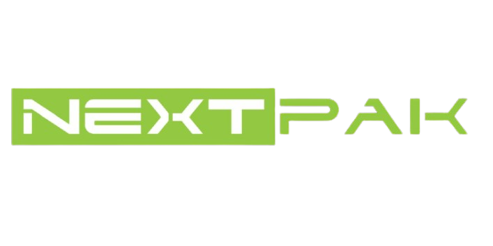

Hello, I'm
AI-oriented Software Quality Assurance Engineer
📍 Lahore, Pakistan
AI-oriented Software Quality Assurance Engineer with over 2 years of experience in ensuring the quality, reliability, and performance of modern software applications. I specialize in both manual and automation testing, helping development teams deliver stable, scalable, and user-focused products.
My expertise includes functional, regression, smoke, sanity, API, performance, and cross-browser testing for web, mobile, and desktop applications. I have hands-on experience with Cypress, Postman, JMeter, SQL, and Agile methodologies, enabling me to design effective test strategies, automate repetitive workflows, validate APIs, and identify defects early in the development lifecycle.
I believe quality assurance is more than finding bugs—it's about understanding business requirements, minimizing risks, improving development processes, and delivering exceptional user experiences. I enjoy collaborating with cross-functional teams to ensure every release meets the highest standards of quality and performance.
As software development continues to evolve with Artificial Intelligence, I am continuously exploring AI-powered testing solutions, intelligent automation, and modern quality engineering practices to build faster, smarter, and more reliable testing processes.
I am passionate about continuous learning, solving real-world quality challenges, and contributing to innovative software products. Whether it's designing comprehensive test strategies, building automation frameworks, executing performance tests, or improving release confidence, I strive to deliver measurable value through quality engineering.
What I bring to the table
2+ years in Quality Assurance
Crewlogix Technologies — Lahore, Pakistan
May 2026 – PresentCareCloud Inc — Islamabad, Pakistan
Dec 2024 – Apr 2026CareCloud Charts – Desktop EHR application used by doctors for managing patient records, medical histories, and clinical documentation. Responsible for full-cycle manual testing, regression testing across releases, and UI/UX validation to ensure compliance with healthcare standards.
CareCloud Central – Comprehensive practice management suite including appointment scheduling, billing, patient records, and claims processing. Performed end-to-end testing of core workflows, cross-module integration testing, and post-release stability validation.

NextPak Agile Solutions — Rawalpindi, Pakistan
Jul 2023 – Dec 2024Greetrs – Video messaging platform enabling personalized video greetings. Performed UI, cross-browser, and functional testing; executed load tests for 5,000 concurrent users to validate performance under peak traffic.
NextEats – Web-based restaurant management system for order processing, menu management, and customer engagement. Conducted UI/UX validation and stress testing for 7,000 concurrent users.
Thessa B2B – B2B e-commerce marketplace connecting suppliers and buyers. Validated admin panel and customer-facing features, performed Figma design verification and responsive testing across devices.
Tealpot – Freelancing platform connecting clients with professionals. Took full QA ownership mid-development, creating test plans from scratch and managing all testing cycles.
Game Coin – Sports membership and rewards application. Tested mobile and web interfaces, verified payment gateway integration, and validated user account management workflows.
FOS (Fabric Ordering System) – Enterprise fabric ordering platform with order workflow management, access control, and inventory tracking. Performed admin/customer regression testing and data validation.
iControl – IoT smart home and office automation platform. Tested real-time device control, sensor pairing, automation rules, and cross-platform synchronization across mobile and web interfaces.
Academic background